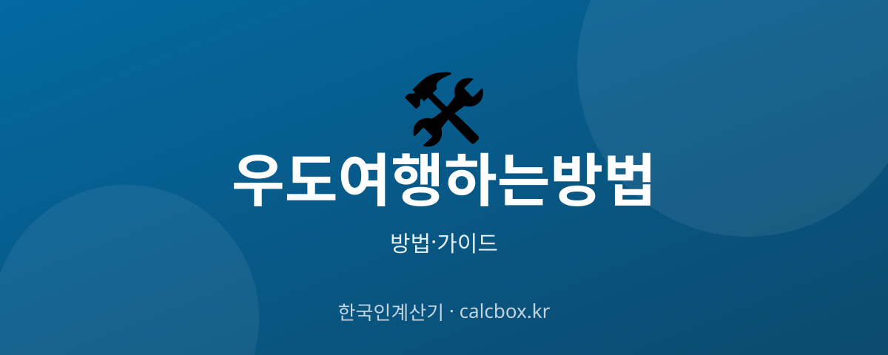

우도 여행 하는 방법 — 배 타는 법·교통·코스 완벽 가이드 (제주 우도)
제주 동쪽의 아름다운 섬 우도. 배를 어디서 타는지, 섬 안에서는 어떻게 이동하는지 처음 가는 사람도 헷갈리지 않도록 순서대로 정리했습니다.

우도 여행 — 핵심부터 정리
우도는 제주 본섬 동쪽 성산항 또는 종달항에서 배(도항선)를 타고 약 15분이면 도착하는 섬입니다. 대부분의 여행객은 성산항을 이용합니다.
핵심 순서는 배편 확인 → 승선 신고서 작성 → 도항선 탑승 → 섬 안 이동수단 선택입니다. 우도는 관광객 렌터카 반입이 제한되므로 섬 안 교통을 미리 알아두는 것이 중요합니다.
우도 여행 방법 (단계별)
- 성산항으로 이동 — 제주공항이나 숙소에서 성산포항 종합여객터미널로 이동합니다. 렌터카는 성산항 주차장에 세워두고 배는 사람만 타는 것이 일반적입니다(관광객 차량은 우도 반입 제한).
- 도항선 시간표·요금 확인 — 우도행 도항선은 보통 30분~1시간 간격으로 운항하며 왕복 요금과 우도 입도(환경부담)금이 함께 부과됩니다. 계절·기상에 따라 첫배·막배 시간이 달라지니 당일 시간표를 확인합니다.
- 승선 신고서 작성·발권 — 터미널에서 승선 신고서(이름·연락처·주소)를 작성하고 신분증을 지참해 왕복권을 발권합니다. 돌아올 때도 같은 표로 아무 배나 탈 수 있습니다.
- 도항선 탑승·입도 — 배에 올라 약 15분이면 우도 천진항 또는 하우목동항에 도착합니다. 두 항구 중 배편에 따라 도착지가 다르니 안내를 확인하세요.
- 섬 안 이동수단 선택 — 우도 도착 후 전기차·전기자전거·스쿠터를 대여하거나 우도 순환버스를 이용합니다. 걷기에는 섬이 크므로(둘레 약 17km) 이동수단을 정하는 것이 좋습니다.
- 해안 코스 여행 — 홍조단괴 해빈(서빈백사), 검멀레해변, 우도봉, 하고수동해수욕장 등 해안을 따라 시계 방향으로 돌며 구경합니다. 우도 땅콩 아이스크림도 대표 먹거리입니다.
- 막배 시간 전 귀항 — 돌아가는 배는 막배 시간이 정해져 있으니 최소 30분 전에는 항구로 돌아옵니다. 성수기·주말에는 대기 줄이 길어질 수 있어 여유를 두세요.
알아두면 좋은 팁
- 관광객은 원칙적으로 렌터카를 우도에 가지고 들어갈 수 없습니다(교통약자·장기체류 등 예외). 섬 안 이동은 전기차·자전거·순환버스를 이용하세요.
- 당일치기라면 첫배로 들어가 오후 막배로 나오는 일정이 여유롭습니다. 성수기에는 배 대기가 있으니 이른 시간이 유리합니다.
- 전기자전거·스쿠터는 면허·안전장비 규정을 확인하세요. 운전이 부담되면 우도 순환버스로도 주요 명소를 돌 수 있습니다.
- 우도봉·해변은 바람이 강할 수 있어 겉옷과 편한 신발을 챙기면 좋습니다.
- 기상 악화 시 도항선 운항이 통제될 수 있으니, 출발 전 성산항 여객터미널이나 선사에 운항 여부를 확인하세요.
⚠️ 기상(강풍·풍랑)에 따라 배편이 갑자기 결항될 수 있습니다. 특히 겨울·환절기에는 당일 운항 여부를 반드시 확인하고, 섬에서 나오는 막배 시간을 놓치지 않도록 주의하세요.
우도 배편·운항 정보는 어디서 확인하나요?
도항선 시간표와 요금, 결항 여부는 성산포항 종합여객터미널 및 우도 도항선 선사 안내를 통해 확인하는 것이 가장 정확합니다. 계절·요일에 따라 운항 시간이 달라지므로 출발 당일 다시 확인하세요.
제주 관광 정보: 비짓제주(visitjeju.net) 에서 우도 교통·명소 정보를 참고할 수 있습니다.
자주 묻는 질문 (FAQ)
Q. 우도에 렌터카를 가지고 들어갈 수 있나요?
일반 관광객 차량은 원칙적으로 우도 반입이 제한됩니다. 교통약자, 장기 체류 등 일부 예외를 제외하면 차는 성산항에 두고 배는 사람만 타며, 섬 안에서는 전기차·자전거·순환버스를 이용합니다.
Q. 우도까지 배는 얼마나 걸리나요?
성산항에서 우도까지 도항선으로 약 15분 정도 걸립니다. 배는 보통 30분~1시간 간격으로 운항하지만 계절과 기상에 따라 시간표가 달라지니 당일 확인이 필요합니다.
Q. 우도 당일치기 여행이 가능한가요?
가능합니다. 첫배로 들어가 섬을 한 바퀴 돌고 오후 막배로 나오면 반나절~하루 코스로 충분합니다. 다만 막배 시간을 반드시 확인하고 여유 있게 항구로 돌아오세요.